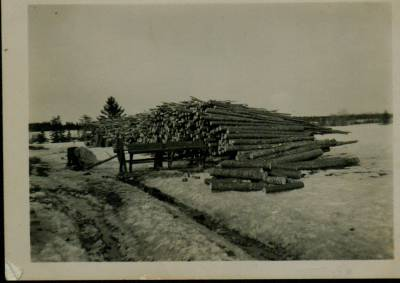
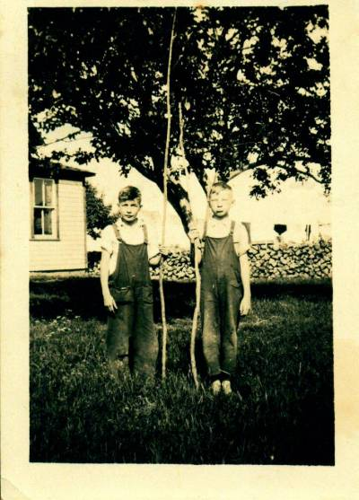

The Family Chronicle
No.40 May 10, 2003
________________
Follow-up

Undated photo of a woodcutter and typical woodpile at my home. Sometimes we had a larger pile and more large logs.
Some sources of information:
Crown Land Grant Index published by the Minister of Natural Resources and Energy, Fredericton, N.B. in 1988. The book is the size of a standard page and about 2.5 inches thick. Entries are alphabetical by name of Grantee. You may be able to find them through the NB Government website.
- Crown Land maps put out by the Department of Natural Resources and Energy, Fredericton, NB. Mine is dated 1977.
Geographical Names of New Brunswick by Alan Rayburn published by the Surveys and Mapping Branch, Department of Energy Mines and Resources in 1975. I am told that this is no longer available but you may find one in your local library.
For those who have Chronicle No. 30, Marjorie (Watling) Young has identified the unknown person as Norman Ferguson whose mother was Cynthia Finno married to Hector Ferguson. Cynthia’s mother was Isabella Macdonald a sister of Grace MacDonald married to Jubal Watling making him my second cousin.
Based on a conversation with George Watling and comments by others, I revised the list of teachers as follows:
Marguerite (Bell) MacDonald
Katie MacNaughton (Annie was a nurse)
Annie Ellis 1925?
Jeni Oleskevis
Charles Spencer – 2 years
Donald MacLean – 2 years
Rilma Tracy
Mary (Godfrey) Williston 1934-1937
Ernestine McKnight 1937-1939
Bertie MacLean –
Patty Fowlie 1939-1940
Marion Smith 1940-1941
Minnie Fowlie 1942-1943
Venetia Russell 1955-1958
I am interested in corrections and additions.
George reminded me of going coasting behind our barn with Fraser MacKay. Instead of going down over the steep bank, the sled rode out over a birch tree leaning over the bank. George and Fraser tumbled to the shore ice below.
The Little Branch was a great trout stream and, although we fished from the shore on occasion, our favourite spot was to fish from the wharf or from the rocks by the cove. The channel ran close to that side of the river. The best time of day, I thought, was either late evening or early morning just when the tide was starting to turn – starting to come in was preferred.
Our fishing rods were alders. In the photo below, George’s rod is both straighter and longer. That is not to say that he caught more fish. We used a hook and worms for bait, and many a worm we drowned. I liked fishing from the corner of the wharf or on our side of the bridge letting the line be carried down river with the tide. That was a bit tricky, however, since the hook frequently caught on a log under the bridge. Hooks were in short supply and a lost hook was worth talking about. I didn’t know what a lure was although some may have had them.
The Branch Bridge was also a favourite fishing place for folks who were not local. One frequent visitor was Major Ramsay. It seems to me that he worked at with NB Tel but I am not sure. He would get upset when people would make a noise while he was fishing. Some school days when major Ramsay was fishing at the upper side of the bridge, some boys would go near the bridge and throw stones into the water just to upset him.
Billy Harper was an avid and successful fisherman. When he was fishing, I would try to sit as close to him as possible because he always seemed to know where the fish were.
We did not have proper fishing line. Instead we had white string taken from flour or seed

Undated photo of George Watling and Don Glendenning taken in the Glendenning yard. Note the pile of 2-foot hardwood in the background. This was our winter’s wood for the furnace.
bags. Mother would soak the string in strong tea over night so that it would not be so white.
One time George Watling and I found an old piece of net (in Uncle Jim’s shed, I believe) and decided to string it across the river. Late in the evening, we climbed along under the bridge and tied the net so that it stretched across the river. Early the next morning, we went down to bring home our catch – no trout but I think that we did catch one gasperaux.
The Chronicle is an occasional newsletter published by Don Glendenning It is intended to solicit and provide information about family tree matters. Comments, enquiries and information may be sent to 62 Queen Elizabeth Drive, Charlottetown, PEI, C1A 3A9. Tel: 902-892-5859 Email: dglende @attglobal.net. Feel free to make and pass along copies of this newsletter.